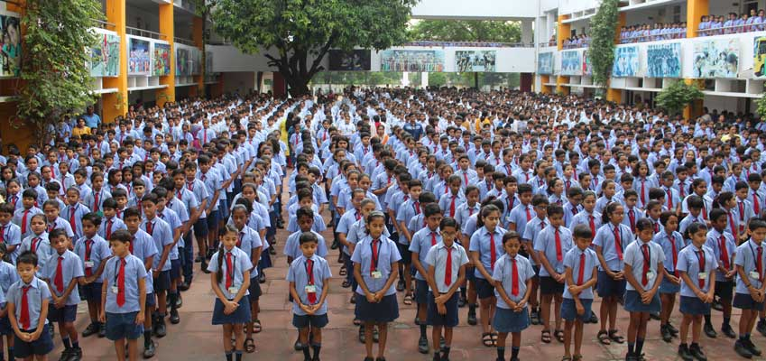

ASSEMBLY AND MORAL EDUCATION

To include moral values among the students, the school starts each working day with morning assembly that includes recitation of Mantras, devotional songs, patriotic songs and commandments from the Arya samaj. Thought for the day, vision & mission of the school is also stated. Stress is laid on universal aspects and eternal values of Indian culture. Short talks are given by the students & teachers on variety of students & important current events. The news is read out daily by a student. Every morning the assembly disperses with the singing of National Anthem. Hawan is performed every Saturday and students are given a chance to perform Hawan. Moral Education is imparted to develop moral values. Vedic initiation camps are held twice a year and are referred to as'Charitra Nirman Shivirs'.
